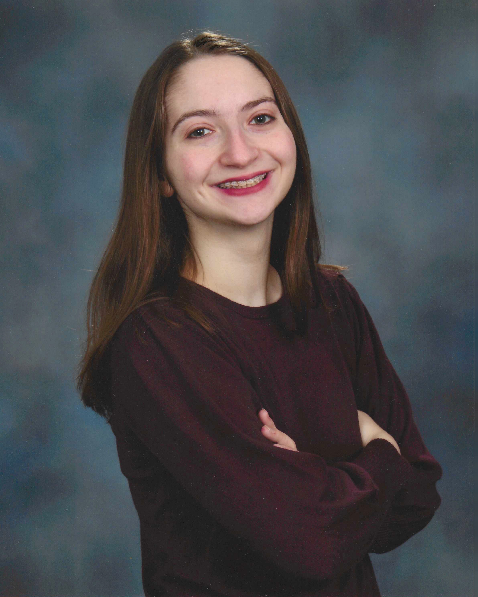
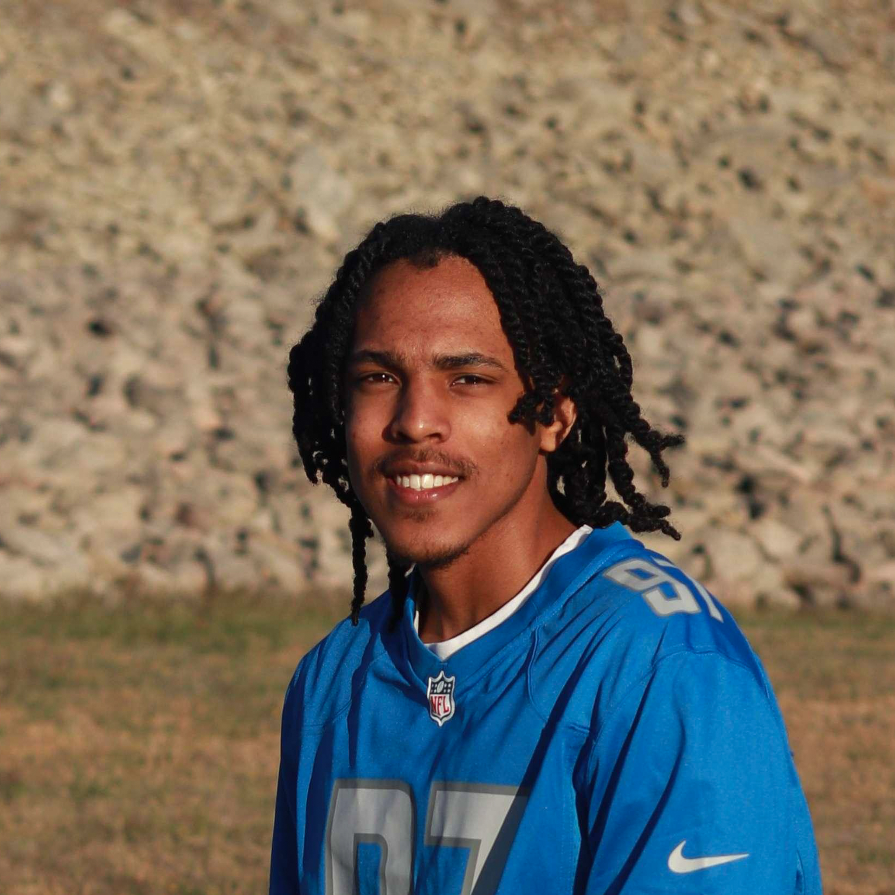

Fengqing (Zoe)
Zhang, PhD, is an Associate Professor in the
Department of Psychology. She obtained a PhD
in Statistics from Northwestern University in
2014 under the supervision of Drs. Ji-Ping
Wang and Wenxin
Jiang. Her research focuses on using
multimodal neuroimaging (e.g., MRI, DTI, fMRI,
PET) to examine neurodegenerative diseases
(e.g., Alzheimer’s disease) and psychiatric
disorders (e.g., PTSD, eating
disorders). Additionally, she works on
the statistical machine learning methods for
informing real time individualized sequences
of treatments (Just-in-Time Adaptive
Interventions) and integrating multimodal data
generated from wearables (e.g., fitness
trackers, heart rate monitors) in the context
of weight loss maintenance and eating
disorders.
Research Interests: Multimodal
Neuroimaging; Machine Learning; Brain
Development and Aging; Mental Health;
Wearable Computing and mHealth
Ana Ferariu is a 3rd
year PhD student in the Applied
Cognitive and Brain Sciences (ACBS)
program at Drexel University.
She earned a Bachelor's degree in
Mathematics from
Drexel University. She
is passionate about Statistics and Data
Science and she is looking forward to a
career in one of these two domains. She
is not only interested in psychological
research, but also in other industries'
data analysis. Ana is also part of
Drexel's Women's Basketball team.
Hansoo Chang is a 4th year PhD
student in the Applied Cognitive and
Brain Sciences (ACBS) program at Drexel
University. He earned his BA at the
University of Pennsylvania where he
majored in Cognitive Science
concentrating in computation and
cognition. Before joining the Zhang lab,
Hansoo worked at Bresslergroup, a
product and design firm, where he used
data-driven techniques to design and
optimize medical products such as
continuous glucose monitors. His primary
interests include using machine learning
and statistical modelling to quantify
whole person health by integrating
neuroimaging, biological, behavioral,
and demographic data.

Alexandra Sahl is a 1st year Psychology Master’s
student at Drexel University. She earned her BA
at Franklin and Marshall College where she
majored in neuroscience. She is interested in
the study of neurodegeneration, specifically
Parkinson’s disease. She is also a dancer and
choreographer.

Kevin Street is a 4th year BSBA student
studying General Business at Drexel
University's Lebow College of Business. As a
senior, Kevin is looking forward to learning
more about how to analyze data effectively;
specifically, he is interested in learning how
to use customer data to describe markets for
the purpose of making marketing decisions.
Kevin is also a freelance photographer who
loves capturing the beauty of the world.
Zachary Rex is a first year
undergraduate student at Drexel University's
College of Arts and Sciences, currently
pursuing a Bachelor of Science degree in
Psychology and planing on attending graduate
school to pursue clinical psychology. Zac
developed an initial interest in psychological
research prior to attending college, and saw
the Zhang lab as the perfect opportunity to
learn about how the fields of psychology and
computer science could be used in tandem.
Previous Lab
Members
Alexei Taylor graduated in
2024 with a PhD degree in the Applied
Cognitive and Brain Sciences from Drexel
University. He earned his BA at Rutgers
University, studying the rodent dopamine
system for his thesis. Before joining the
Zhang lab, he worked at Columbia University
investigating working memory and decision
making in a systems neuroscience laboratory.
He is interested in applying statistical
modelling and data mining techniques to
improve classification and treatment of
psychiatric diseases.
Brian Kim completed his
Psychology Master's degree at Drexel
University in 2022. He received his
undergraduate degree in Computer Science at
Columbia University. He is interested in the
use of statistics and machine learning to
analyze the brain, predict behavior and make
conclusions about mental processes.
Xin Niu graduated in
2021 with a PhD degree in Applied Cognitive and
Brain Sciences from Drexel
University.
He obtained his master's degree at Beijing
Normal University, where he studied the
relationship between gray matter volume and
working memory for his thesis. He is
interested in examining the relationship
between the functional and structural
characteristics of the brain and its
relationship with personality, intelligence
and mental diseases.
Riley Cook graduated from Drexel
University in 2020 with an
MS degree in Psychology. She earned her
Bachelor of Science in Psychology from the
Florida State University, with concentrations
in both neuroscience and clinical psychology.
She is interested in research areas regarding
neurodegenerative disease and the
rehabilitation progress in individuals with
cognitive impairment due to traumatic injury.
Jon Landrigan graduated in 2018 with a PhD
degree in Applied Cognitive and Brain
Sciences from Drexel University. His
research focuses on two main tracts; the
structure of semantic memory and data driven
classifications of aphasia. To investigate
these topics he has used a number of methods
including; behavioral and eye-tracking
studies, computational models, voxel-based
lesion symptom mapping, and applied data
mining and machine learning techniques. He
has also worked on a number of other
projects that have cut across multiple
domains. In a recent collaboration he worked
with colleagues to investigate food choice
behaviors between athletes and non-athletes
in a real world buffet setting and is
currently working on a meta-analysis
investigating the effects that resistance
training has on cognition. Further given
recent advances in data generation and
collection he is very interested in applying
data mining and machine learning techniques
to various domains. More information could
be found from his
personal website.
Tinashe
Tapera graduated from Drexel University in
2018 with an accelerated BSc/MSc in
Psychology . He is interested in machine
learning and statistical modelling
applications in psychological behaviour
research, particularly diet and physical
activity.